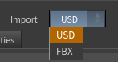

USD vs FBX
Version 1.2 added a second way to import your character. At the very top of the node is an Import dropdown with two choices — USD (the default) and FBX. Both produce the same shaded, animatable character with the same lookdev controller; they differ only in import speed and in a few features that depend on data Character Creator writes to one export but not the other.

TL;DR — what you get from each
Bottom line
Use USD for almost everything — it's far faster, far lighter, and better at eyes/skin because it carries Character Creator's real shader values. Switch to FBX only when you specifically need animated expression wrinkles or the full hair re-dye (root-to-tip / highlight streaks).
Why USD is so much faster
Character Creator's FBX stores every facial blendshape as a full mesh copy, and Houdini has to expand all of them on import — tens of gigabytes of RAM and a minute or more on a heavy HD character. The USD export keeps those blendshapes sparse, so Houdini reads them almost instantly. In our tests a heavy HD character that took ~96 s and ~13 GB via FBX imported in ~1.3 s and ~0.9 GB via USD — and the gap grows the heavier the character. Because USD imports in about a second, the Skin Cache is unnecessary there and its controls are hidden.
What USD does better — real Character Creator eye & skin values
The FBX export leaves out most of Character Creator's HD eye shader, so in FBX mode the eye controls start from generic defaults you dial in by eye. The USD export carries Character Creator's actual shader values, so in USD mode the tool reads them and seeds the controller automatically — real iris color (when CC actually tinted it), iris size and limbal ring, and sclera shading and subsurface amount from the real per-character values. It's all still adjustable; these are just smarter starting points, and Reset to Defaults returns to them. See Eyes.
What USD mode does not carry
Character Creator's USD export omits some data the FBX export includes. Where that happens, the affected controls stay visible but are disabled with an "(FBX import only)" note — nothing is hidden or silently broken.
- Expression wrinkles — the animated head-wrinkle system is FBX only; the USD export contains no wrinkle maps or weights. See Wrinkles.
- Root-to-tip and highlight hair re-dye — Character Creator's USD export leaves out the hair root, ID, and flow maps, so the ombré recolor, highlight streaks, and flow-based sheen are FBX only. A flat re-dye and the Lightness (Bleach) control still work in USD. See Hair.
Everything else — including displacement — works in both modes.
Mixing sources
The animation database accepts both FBX and USD motion clips, in either import mode — and USD clips are far lighter (see Animation). USD binds in a T-pose while FBX binds in an A-pose, so when a clip's format differs from the Import mode the tool turns Retarget Animation on automatically. A character driven by its own embedded animation is always correct.
Switching modes
The Import dropdown swaps which file field is shown — CC5/iClone USD or CC5/iClone FBX — and rebuilds accordingly on Build Character. You can switch an existing node between modes any time; just set the matching file. Scenes saved before 1.2 load in FBX mode automatically, so nothing you built before changes.
Next: Preparing Your Character covers how to export for both modes.